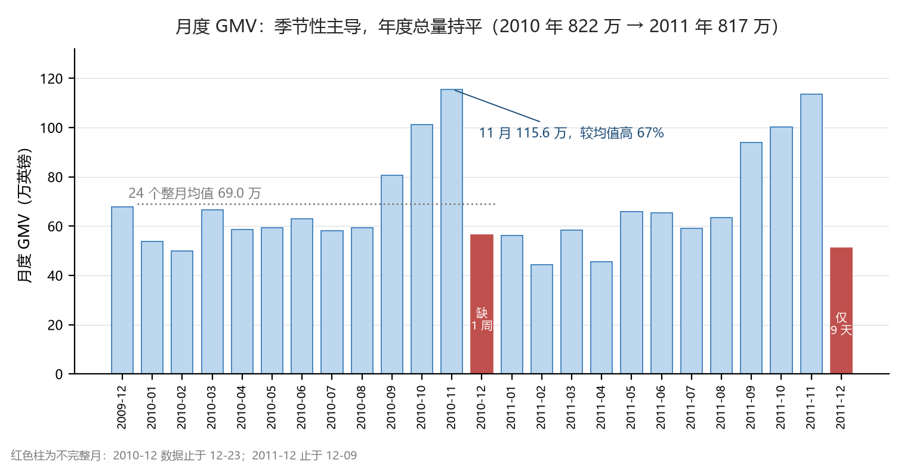
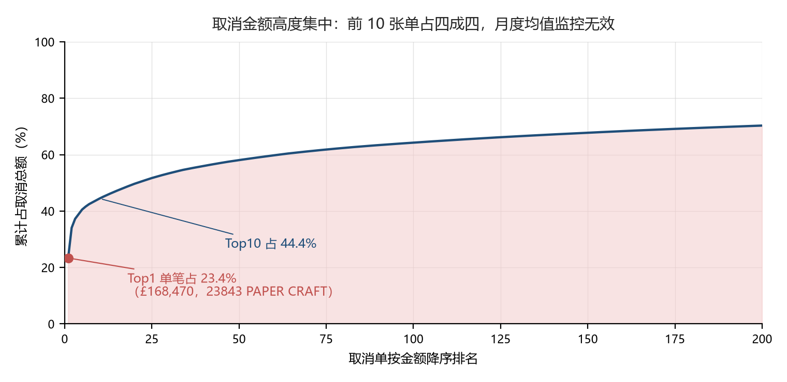
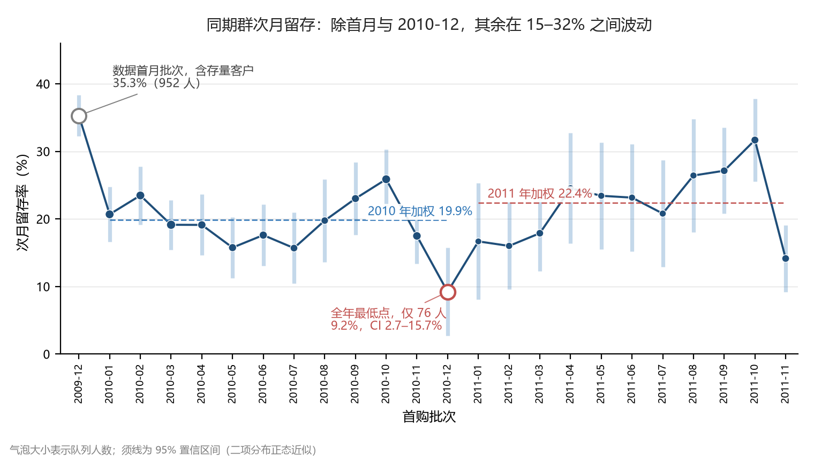
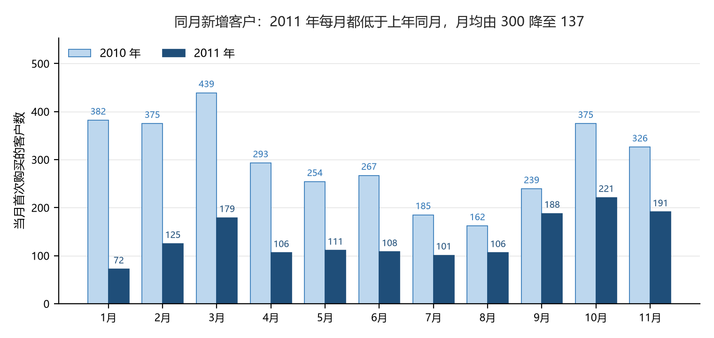
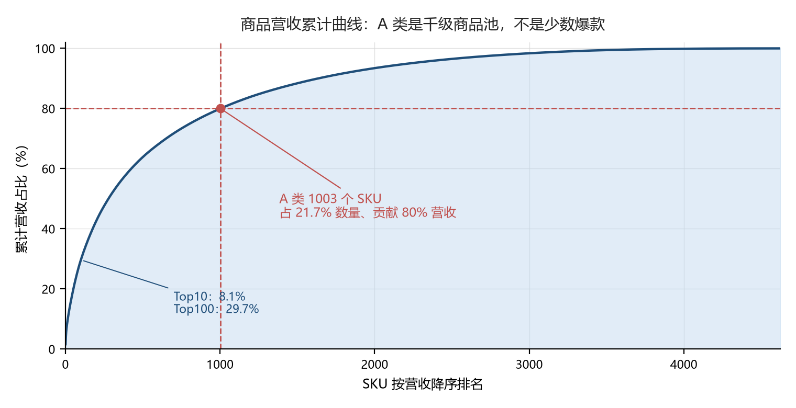
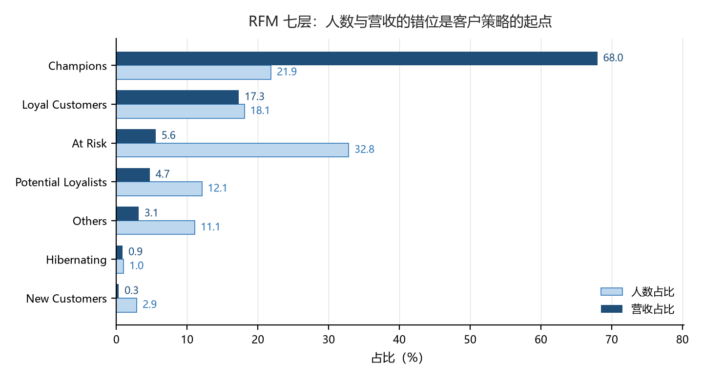
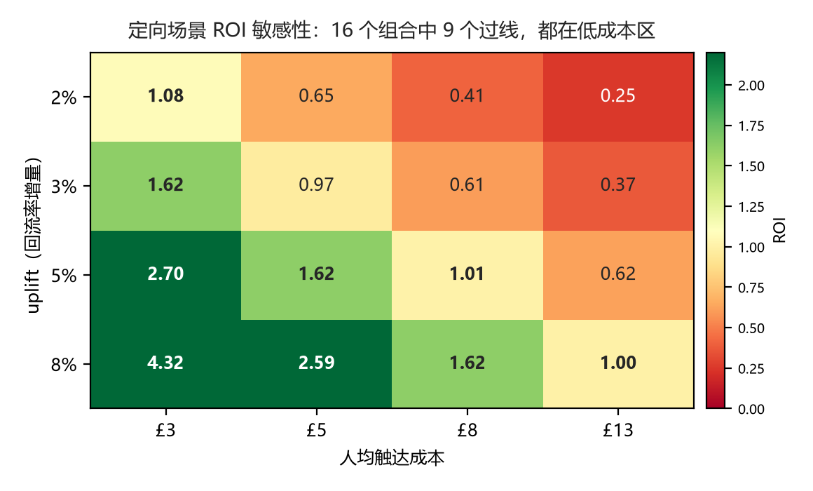

季节性主导，年度总量几乎持平
11 月 GMV 比 24 个月均值高 66.1%，12 月次之；剔除末期残缺月后，月度区间在 £44 万—£116 万之间来回摆动，没有趋势线可画。
收入集中度也很高：英国占 83.7%，10—11 月合计占全年 26.0%。 这意味着任何一个月的波动，先要看季节位置，再看经营动作。

数据分析项目 · 2026
一家英国在线零售商的 25 个月交易流水，1,067,371 行明细。从数据清洗走到经营诊断、 客户分层、商品结构与召回成本测算，结论全部落在可复核的数字上。
一句话概括：这是一门规模稳定、但没有自然增长的生意；收入集中在英国和年末两个月， 收缩发生在获客端，而不是留存端。
GMV（25 个月）
£17.07M
2010 £822.3 万 → 2011 £817.1 万，−0.6%
有效订单
36,639
清洗去重后
客户数
5,861
CustomerID 非空
客单价
£465.98
GMV / 订单数
取消率
16.64%
单量口径；金额口径 4.22%
滞销 SKU
1,404
占 30.4%，只贡献 7.22% GMV
11 月 GMV 比 24 个月均值高 66.1%，12 月次之；剔除末期残缺月后，月度区间在 £44 万—£116 万之间来回摆动，没有趋势线可画。
收入集中度也很高：英国占 83.7%，10—11 月合计占全年 26.0%。 这意味着任何一个月的波动，先要看季节位置，再看经营动作。

按单量算取消率 16.64%，按金额算只有 4.22%——金额口径的取消更少见，但更致命。
单笔最大取消占取消总额 23.4%，Top 10 占 44.4%。 一笔 £168,470 的订单就能把月度均值拉飞，所以监控必须按单笔阈值设，而不是看偏离均值的百分比。

把客户按首购月份分成 24 个同期群，次月留存加权 23.1%。分年看， 2010 年 19.9%、2011 年 23.6%，差 3.72 个百分点、z = 2.81， 在 5% 水平上显著。
24 个批次的置信区间大面积重叠，没有单调下滑的形态。首末两批的队列规模相差 12.5 倍、观察窗口不同， 不能直接相减。

同月新增客户的月均人数，从 300 人降到 137 人，降幅 54.3%。 2011 年 11 个月里，没有一个月高于上年同月。
降幅本身在收窄：1 月同比 −81.2%，4—6 月维持在 −56% 至 −64%，9—11 月收窄到 −21% 至 −41%。 是持续两年的收缩，但下半年出现了修复迹象。

1,003 个 SKU 贡献 80% 营收，占全部在售 SKU 的两成多；而 Top 10 SKU 只占营收 8.1%。
这个结构决定了运营重心：该管的是千级商品池的可得性与陈列位，而不是押宝几个爆品。 同时它也是滞销判断的基础——1,404 个滞销 SKU 里，A 类只有 69 个。

1,404 个滞销 SKU 占全部 SKU 的 30.4%，两年却只贡献 7.22% GMV。
| 分层 | 滞销 SKU 数 | 占滞销营收 | 动作 |
|---|---|---|---|
| A 类 | 69 | 39.0% | 先查断货，别误清 |
| C 类 | 1,103 | 仅占 GMV 1.78% | 优先释放陈列位 |
清 C 类伤不到 GMV，但 A 类那 69 个必须先确认是真的卖不动，还是断货缺货造成的「假滞销」。 数据里没有进货价，所以毛利、库存资金占用、清仓损失都算不成金额，建议只能停在「释放陈列位」这一层。
Champions 1,191 人，占人数 20.3%、贡献营收 68.8%； 按金额单独排序，前 10% 客户贡献 63.9%，与分层结论互相印证。
另一头，At Risk 占人数 36.1%，却只贡献 6.8% 营收。只看人数会得出「三分之一客户要流失」的警报， 只看营收又觉得无所谓——两种读法都不对，召回的钱只该花在有历史价值的那一小部分。
另外，RFM 与生命周期两套标签高度共线（都由最近购买间隔主导），交叉成矩阵是一条对角线，没有增量信息。 有增量的是把历史价值与沉默时长分开看：最高价值档里沉默超过 180 天的只有 113 人， 这才是值得人工触达的范围，而不是 2,117 人一起发券。

把 uplift 假设 × 客单价 × 触达人数 − 券成本摊成一张 4×4 敏感性网格，可以看到：在小幅 uplift 下，绝大多数格子是负收益；只有当 uplift 超过一定阈值、券成本压得住，才转正。
更关键的是样本量：30 天二次购买基线实测 22.61%，在 α=0.05、power=0.8 下， 要测出 +3pp 每组需要 3,188 人——按月均 137 个新客要跑 46 个月。+10pp 只需 310 人，两个月能跑完。所以先追大颗粒度改造，再谈小幅优化。

原始 1,067,371 行（两个 sheet 合并） → 保留 Quantity > 0 且 Price > 0 剔除退货与零负价 → 剔除 CustomerID 为空 留存/客户结构类指标的分母 → 按七列去重 两表在 2010-12-01~09 重叠，1,088 张发票 → 剔除非商品编码 POST / BANK CHARGES / AMAZONFEE / Manual / DOT 等 = 有效订单 36,639 ／ 客户 5,861 ／ GMV £17,073,078
取消金额不能看月度均值
2011-12 只有 9 天数据，这 9 天取消金额有 17.4 万英镑，其中 97% 来自同一笔订单（单笔 £168,470）。 一笔大额取消就能把月均值拉飞，监控要按单笔阈值设。
“跑一个月按实际分布校准”站不住
30 天二次购买率基线 22.61%（首单后有完整 30 天观察窗的 5,691 人中有 1,287 人复购）。 定向召回方案只有 430 人，连 5pp 都测不出来。这条建议因此改成先追大颗粒度改造。